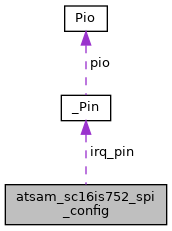

|
RTEMS
5.0.0
|
|
RTEMS
5.0.0
|
The SC16IS752 device configuration. More...
#include <sc16is752.h>

Data Fields | |
| const char * | device_path |
| The device file path for the new device. More... | |
| sc16is752_mode | mode |
| The SC16IS752 mode. More... | |
| uint32_t | input_frequency |
| The input frequency in Hertz of the SC16IS752 chip. See XTAL1 and XTAL2 pins. More... | |
| const char * | spi_path |
| The SPI bus device path. More... | |
| uint8_t | spi_chip_select |
| The SPI chip select (starts with 0, the SPI driver uses SPI_ChipSelect(1 << spi_chip_select)). More... | |
| uint32_t | spi_speed_hz |
| The SPI bus speed in Hertz. More... | |
| const Pin | irq_pin |
| The interrupt pin, e.g. { PIO_PD28, PIOD, ID_PIOD, PIO_INPUT, PIO_IT_LOW_LEVEL }. More... | |
| uint32_t | server_index |
| The index to identify the interrupt server used for interrupt processing. More... | |
The SC16IS752 device configuration.
Definition at line 45 of file sc16is752.h.
| const char* atsam_sc16is752_spi_config::device_path |
The device file path for the new device.
Definition at line 49 of file sc16is752.h.
| uint32_t atsam_sc16is752_spi_config::input_frequency |
The input frequency in Hertz of the SC16IS752 chip. See XTAL1 and XTAL2 pins.
Definition at line 60 of file sc16is752.h.
The interrupt pin, e.g. { PIO_PD28, PIOD, ID_PIOD, PIO_INPUT, PIO_IT_LOW_LEVEL }.
Definition at line 82 of file sc16is752.h.
| sc16is752_mode atsam_sc16is752_spi_config::mode |
The SC16IS752 mode.
Definition at line 54 of file sc16is752.h.
| uint32_t atsam_sc16is752_spi_config::server_index |
The index to identify the interrupt server used for interrupt processing.
Definition at line 88 of file sc16is752.h.
| uint8_t atsam_sc16is752_spi_config::spi_chip_select |
The SPI chip select (starts with 0, the SPI driver uses SPI_ChipSelect(1 << spi_chip_select)).
Definition at line 71 of file sc16is752.h.
| const char* atsam_sc16is752_spi_config::spi_path |
The SPI bus device path.
Definition at line 65 of file sc16is752.h.
| uint32_t atsam_sc16is752_spi_config::spi_speed_hz |
The SPI bus speed in Hertz.
Definition at line 76 of file sc16is752.h.
 1.8.17
1.8.17